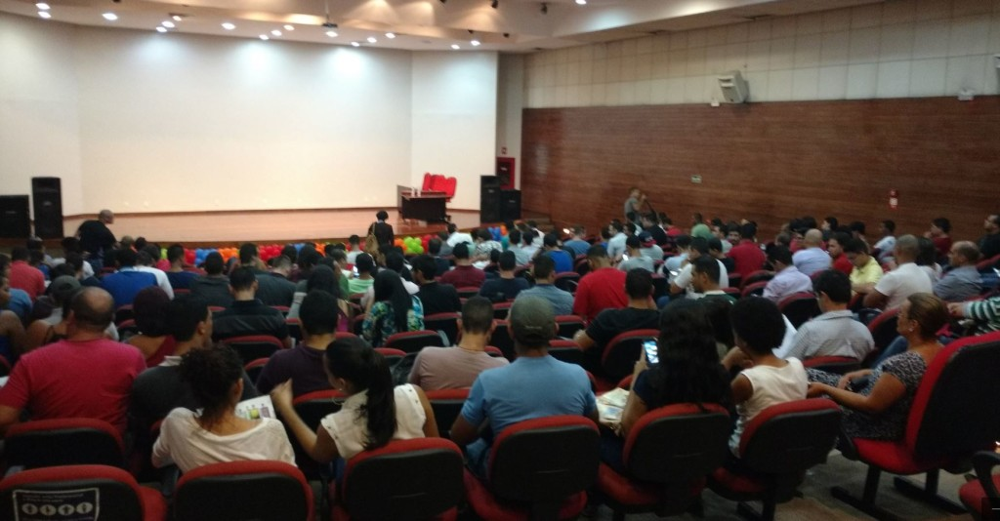

{kind=link}

Sala quase lotada aguardando o início da palestra sobre a Carreira do profissional de dados[/caption] Parabéns a todos os profissionais de Tecnologia da Informação pelo seu dia. Fiquei muito feliz pelo convite recebido da Professora Vanessa Ribeiro, através do intermédio do meu amigo Luciano Moreira (Luti) [Twitter | Blog] para realização de uma palestra sobre Carreira relacionada a Banco de dados para os alunos dos cursos de Tecnologia, da Faculdade Projeção. O auditório estava quase lotado e acredito que tenha sido muito proveitoso para todos, pelos feedbacks que recebi logo após o término da apresentação. [caption id="attachment_1783" align="aligncenter" width="600"] Minutos antes do início da apresentação[/caption] Conforme prometido, seegue o PPT utilizado na apresentação: Muito obrigado a todos os presentes, espero de alguma forma ter ajudado a esclarecer e a direcionar um pouco a carreira de vocês por meio dos exemplos citados dos diferentes tipos de funções que podem existir para os profissionais que trabalham com dados e informações Abraços, Edvaldo Castro http://facebook.com/edvaldocastro19 de Outubro - Dia do profissional de TI
Faculdades Projeção - Taguatinga - 19 de Abril - Dia do Profissional de TI
[caption id="attachment_1784" align="aligncenter" width="600"]
{kind=link}